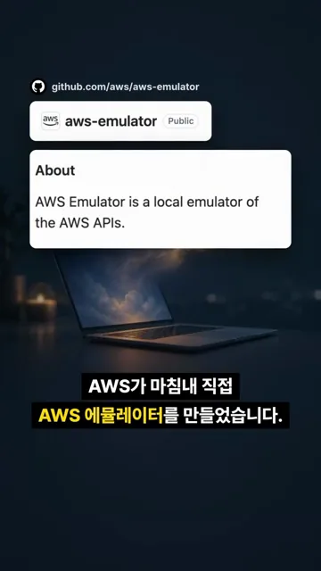
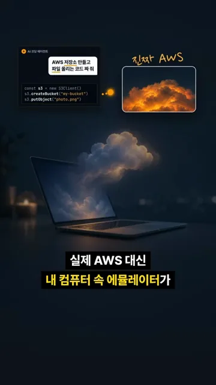
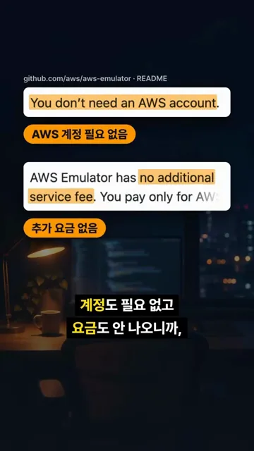
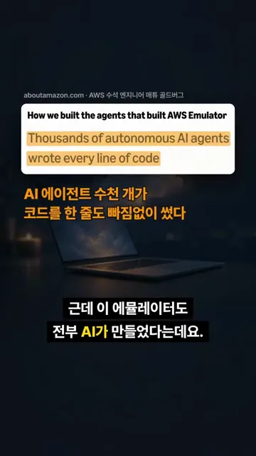
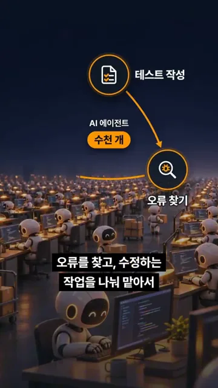
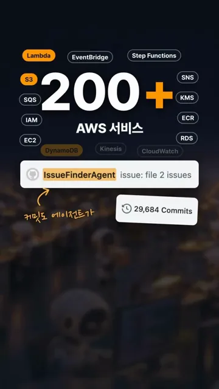
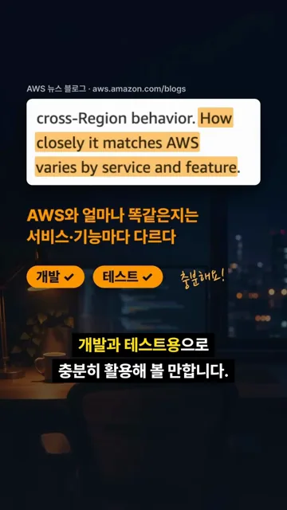

내 컴퓨터 속 가짜 AWS
영상은 GitHub 저장소 화면으로 시작해요. 주소는 github.com/aws/aws-emulator이고, About 칸에 'AWS API의 로컬 에뮬레이터'라는 한 줄 소개가 있어요. AWS 계정 아래에 있는 공개 저장소라서 AWS가 직접 낸 프로그램이라는 걸 알 수 있어요.

어떻게 쓰는지는 예시 하나로 보여 줘요. 왼쪽 위 'AI 코딩 에이전트' 창에 'AWS 저장소 만들고 파일 올리는 코드 짜 줘'라는 요청이 있고, 그 아래에 에이전트가 짠 코드 세 줄이 있어요. S3(Amazon Simple Storage Service) 클라이언트를 만들고, createBucket으로 버킷을, putObject로 파일을 올리는 코드예요. 이 요청이 오른쪽 위 '진짜 AWS' 구름으로 가지 않고 노트북 위 작은 구름, 즉 내 컴퓨터 속 에뮬레이터로 가요.

왜 좋은지는 README 두 줄로 짚어요. 노란색으로 칠한 'You don't need an AWS account'는 계정이 필요 없다는 말이고, 'no additional service fee'는 에뮬레이터에 따로 요금이 붙지 않는다는 말이에요. 그래서 AI가 짠 코드를 실제로 배포하기 전에 돈 걱정 없이 돌려 보고 고칠 수 있어요.

에뮬레이터도 AI 에이전트가 만들었어요
영상 후반은 '이 에뮬레이터도 AI가 만들었다'는 이야기예요. 화면에 뜬 글은 aboutamazon.com에 실린 'How we built the agents that built AWS Emulator'예요. 위쪽 출처 줄에 'AWS 수석 엔지니어 매튜 골드버그'가 적혀 있고, 형광펜 문장은 자율 AI 에이전트 수천 개가 코드를 한 줄도 빠짐없이 썼다는 내용이에요.

에이전트들은 일을 나눠 맡았어요. 화면에는 '테스트 작성' 아이콘에서 '오류 찾기' 아이콘으로 화살표가 이어지고, 가운데에 'AI 에이전트 수천 개' 배지가 있어요. 말로는 그다음 단계인 수정까지 이야기해요.

세 가지 일을 이으면 아래처럼 계속 도는 고리가 돼요. 테스트가 실제 AWS와 다른 점을 드러내면, 그걸 고치고, 다시 테스트로 확인하는 식이에요.
flowchart LR A["테스트 작성"] --> B["오류 찾기"] --> C["오류 수정"] --> A
그 결과가 '200+ AWS 서비스' 화면이에요. 숫자 둘레에 S3, Lambda, DynamoDB, SQS(Amazon Simple Queue Service), IAM(AWS Identity and Access Management), EC2(Amazon Elastic Compute Cloud), SNS(Amazon Simple Notification Service), KMS(AWS Key Management Service) 같은 서비스 이름이 붙어 있어요. 아래 카드에는 이슈를 찾는 에이전트 IssueFinderAgent의 기록과 29,684 Commits가 보이고, 손글씨로 '커밋도 에이전트가'라고 적혀 있어요.

어디까지 믿고 쓸까요?
마지막은 한계 이야기예요. AWS 뉴스 블로그 문장에 형광펜이 칠해져 있어요. 실제 AWS와 얼마나 똑같은지는 서비스와 기능마다 다르다는 내용이에요. 아래에 '개발'과 '테스트'에 체크 표시가 붙고, '충분해요'라는 손글씨가 있어요.

그러니 쓰기 전에 내가 쓰는 서비스가 얼마나 잘 맞는지부터 보는 게 좋아요. 영상은 여기까지만 다뤄요. 서비스별 수준은 아래 보충 설명의 공식 자료에서 확인할 수 있어요.